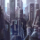

Celestial object
Celestial objects are large bodies within systems, including stars, planets, moons, and asteroids. Celestial objects may have resources which can be harvested by orbital stations. Each start system can have between 2 and 15 celestial objects.
When any owned ship enters a system or passes within its sensor range, any habitable planets in the system will be revealed along with their world type. To see further details about the celestial objects in a system, it is necessary to survey them with a science ship. This will reveal all of the orbital resources associated with each planet or asteroid. For habitable worlds, this will also reveal more detailed world information including: size, available districts, planetary features and blockers (if any), and the habitability for each species in the player's empire. Additionally, surveying worlds has a chance to reveal anomalies.
Planet size
The  planet size determines the visual size of a planet and the maximum number of districts the planet can support if it's habitable. Planets can have various sizes, but habitable ones will always be within the following margins:
planet size determines the visual size of a planet and the maximum number of districts the planet can support if it's habitable. Planets can have various sizes, but habitable ones will always be within the following margins:
- Planets have a size between 12 and 25.
- Moons have a size between 10 and 15.
- Homeworlds have a size between 18 and 21, unless otherwise determined by the empire's origin.
Planet capacity
| World Type | Planet capacity |
|---|---|
|
+3 |
|
+4 |
|
+6 |
Each world has a Planet capacity, which determines the logistic pop growth bonus or malus from  pops. There are three sources of planet capacity:
pops. There are three sources of planet capacity:
 Housing: Each unit of unused housing provides +1 planet capacity.
Housing: Each unit of unused housing provides +1 planet capacity. Districts: Free district slots will grant planet capacity depending on the world type (see table). Clearing
Districts: Free district slots will grant planet capacity depending on the world type (see table). Clearing  tile blockers increases planet capacity. Building districts can alter planet capacity, depending on whether the housing bonus is higher or lower than the capacity bonus of the undeveloped district.
tile blockers increases planet capacity. Building districts can alter planet capacity, depending on whether the housing bonus is higher or lower than the capacity bonus of the undeveloped district. Pops: Every pop provides +1 planet capacity, but also uses housing. Therfore, only pops with
Pops: Every pop provides +1 planet capacity, but also uses housing. Therfore, only pops with  pop housing usage modifiers affect planet capacity, e.g. every pop with the communal trait (and no other modifiers) provides +0.1 planet capacity in total.
pop housing usage modifiers affect planet capacity, e.g. every pop with the communal trait (and no other modifiers) provides +0.1 planet capacity in total.

Habitable planets
Habitable planets are the only natural celestial objects that can be colonized and terraformed, without the 
 Terraforming Candidate planet modifier.
Terraforming Candidate planet modifier.
There are nine types of regular habitable planets, divided equally into three climate categories:  Wet, Dry, and Cold. Each type's
Wet, Dry, and Cold. Each type's  base habitability for a given species depends on how closely it matches a species' homeworld: in general, a species will have 100% habitability for its homeworld, 80% habitability for planets of the same type, 60% habitability for planets of the same climate category, and 20% habitability for every other climate category and type. Finally, these habitability values can be both increased and decreased species-wide by certain traits and for a given planet by certain planetary features and planetary modifiers.
base habitability for a given species depends on how closely it matches a species' homeworld: in general, a species will have 100% habitability for its homeworld, 80% habitability for planets of the same type, 60% habitability for planets of the same climate category, and 20% habitability for every other climate category and type. Finally, these habitability values can be both increased and decreased species-wide by certain traits and for a given planet by certain planetary features and planetary modifiers.
A planet's type also affects the set of possible planetary features and blockers it may have. Each of the three climate categories has a slight bias towards different resources from their planetary features.
Volcanic Worlds can only appear if the  Infernals DLC is installed. Their
Infernals DLC is installed. Their  Alloys from jobs output is increased by +5% and they use a different set of districts.
Alloys from jobs output is increased by +5% and they use a different set of districts.
{kind=link}
{kind=link}
{kind=link}
Special habitable planets
Special habitable planets are only spawned in certain systems, but any empire that meets the requirements can terraform a regular habitable world into a special one. Certain origins use one of these as the empire's homeworld.
All of them have either very high or zero habitability, and several of them feature "Ideal" habitability, meaning that they always have 100% habitability, disregarding bonuses and penalties.
| Type | Habitability | Effects | Terraforming methods | Preexisting worlds | Notes |
|---|---|---|---|---|---|
| Ideal |
|
|
| ||
| 0% |
|
|
| ||
| 80% |  Allows the Restore Ecumenopolis decision |
|
| ||
| Ideal |
|
Keepers of Knowledge homeworld |
| ||
| Ideal |
|
|
| ||
| 0% Ideal if |
|
|
|
| |
| 0% Ideal if |
|
|
{kind=link}
Habitable megastructures
Habitable megastructures are artificial celestial objects and can be constructed using resources after researching the required technology. They feature the same  Habitability for every species and have different districts and designations. They do not normally have any planetary features on them but may contain blockers. Their appearance depends on the ship appearance of the empire that constructed them.
Habitability for every species and have different districts and designations. They do not normally have any planetary features on them but may contain blockers. Their appearance depends on the ship appearance of the empire that constructed them.
| Type | Habitability | Size | Effects | Construction methods | Preexisting worlds |
|---|---|---|---|---|---|
Ring World An immense band encircling the system's sun. Built to allow for numerous artificial habitation zones along its inner span, freed from the restrictions and mundanity of planet-bound, spherical existence. |
Ideal | 10 |
| ||
Shattered Ring World An immense band encircling the system's sun. This section of the megastructure has sustained damage - especially to some of its more advanced districts - but it does not appear irreparable. |
Ideal | 25 | Enables the Repair the Shattered Ring decision | ||
Orbital Habitat An artificial deep-space arcology offering planet-like - if decidedly urban - living conditions. Hydroponics and advanced filtering technologies make it near-self-sustaining, and station-borne facilities can mine the station's host planet for raw materials. |
|
6 |
|
| |
Synaptic Lathe A colossal reservoir computing system designed to connect billions of sentient beings, organic or synthetic, via an intricate array of cables, transistors, and life support pods. The intensive strain on individual processing organs will inevitably lead to brain damage for any networked 'component'. |
85% | 2 |
|
Uninhabitable planets
All non-star celestial objects that cannot harbor life are classified as uninhabitable. These planets cannot be colonized or terraformed unless they have the 
 Terraforming Candidate modifier, but they can have various resource deposits.
Terraforming Candidate modifier, but they can have various resource deposits.
| Type | Deposits | ||||
|---|---|---|---|---|---|
| Other | |||||
Barren (Dry) Barren and rocky world with a thin or non-existent atmosphere. The surface is covered in meteor impact craters and is completely devoid of life. |
|||||
Barren (Cold) Barren and rocky world with a thin or non-existent atmosphere. The surface is covered in meteor impact craters and is completely devoid of life. |
|||||
Broken World devastated by some catastrophic event. Whatever properties it may once have had are no longer discernable. |
|||||
Frozen Rocky world covered in a thick layer of permanently frozen ice. Low temperatures and a very thin atmosphere preclude the existence of life on the surface. |
|||||
Gas Giant Gaseous planet with an atmosphere primarily composed of hydrogen and helium surrounding a dense core. |
|||||
Molten Rocky world that is scorching hot. The atmosphere is thin or non-existent, and lava from the interior flows freely due to constant volcanic eruptions. This type of planet cannot sustain organic life. |
|||||
Toxic A rocky planet with a thick atmosphere that is lethal to all known higher forms of life. |
|||||
Special uninhabitable planets
Special uninhabitable planets can only be created in unique systems or as a result of events.
| Type | Notes |
|---|---|
AI Rocky world covered with artificial structures. The thin atmosphere consists mostly of industrial pollutants. There are strong energy emissions coming from across the entire surface, but no organic life signs. |
|
Infested The surface of this world is covered by some kind of biological contaminant. |
|
Shattered The charred, broken remnants of what was once a planet. A massive energy surge has detonated this world's core, leaving only slabs of rock. |
|
Shielded This entire world is encased in some kind of impenetrable energy barrier. It blocks all scans of the surface. |
|
Shrouded Our sensors are unable to penetrate the thick fog surrounding the planet. Ships that enter it do not return. |
|
Protostar A former Gas Giant, now undergoing stellar fusion following the injection of a highly energetic dark matter. Studying this would provide valuable insights. |
|
Cracked The cracked shards of an enormous planet-sized egg. |
|
Junk Moon A large body of magnetized space junk composed of scrap metal, satellite remains, and recaptured megastructure parts. |
|
{kind=link}
Asteroid belts
Asteroid belts can only appear in systems with a single star or special systems. Each single star system has a 30% chance to have an asteroid belt, a 10% chance to have two asteroid belts and a 2% chance to have four asteroid belts. Each asteroid belt will have 1-6 asteroid celestial objects, partially depending on distance from the star. Asteroid belts and the asteroids in them come in 3 types.
- Each asteroid can have deposits of
 Trade Value.
Trade Value. - Ice asteroids can have deposits of
 Energy or
Energy or  Exotic Gases.
Exotic Gases. - Rocky asteroids can have deposits of
 Minerals,
Minerals,  Alloys or
Alloys or  Volatile Motes. If the
Volatile Motes. If the  Grand Archive DLC is enabled, depending on galaxy settings, some rocky asteroids may be Cutholoids.
Grand Archive DLC is enabled, depending on galaxy settings, some rocky asteroids may be Cutholoids. - Crystalline asteroids can only appear in special systems and have deposits of 1 or 3
 Rare Crystals. They can also be found in the home system of empires with the
Rare Crystals. They can also be found in the home system of empires with the  Cosmic Dawn origin but these can only have deposits of Minerals.
Cosmic Dawn origin but these can only have deposits of Minerals.
Asteroids are surveyed twice as fast as other celestial objects (15 days instead of 30).
Stars
A star is a celestial object that composes the center of a star system and influences the generation of the solar system. They are classified based on their spectral characteristics. Less common stars also have a negative effect on all ships in the system, making certain tactics less effective in battle. Different stars have different likelihoods for habitable planets to appear in the system.
Most solar systems are unary systems with only one star, but they can also exist as binary systems with two stars or trinary systems with three stars, either orbiting each other in the center with all planets around them or spread out further apart from each with a few planets orbiting each star. Star effects stack in binary and trinary systems. All binary and trinary systems except for F/M, B/M, B/neutron and A/neutron (which cannot spawn habitable planets) have 100% habitable planet chance. All natural systems have 4-10 (inclusive) orbiting objects, except single neutron stars, black holes and pulsars (which have 1-4).
| Type | Potential resources | Habitable planet chance | Effects | Luminosity | Possible megastructures |
|---|---|---|---|---|---|
|
40% | Strong |
| ||
|
40% | Strong |
| ||
Class F F-type stars are fairly large and often referred to as yellow-white dwarves. Although they often emit significant amounts of UV radiation, their wide habitable zones have a good chance of supporting life-bearing worlds. |
|
100% | Strong |
| |
Class G Often referred to as yellow dwarves, G-type stars actually range in color from white to slightly yellow. Main-sequence stars fuse hydrogen for roughly 10 billion years before they expand and become red giants. Although their lifespans are shorter than K-type stars, worlds inside the habitable zone of a G star often enjoy optimal conditions for the development of life. |
|
100% | Moderate |
| |
|
100% | Moderate |
| ||
Class M The most common stars in the universe, often referred to as red dwarves. Their low luminosity means they are difficult to observe with the naked eye from afar. Although they typically have an extremely long lifespan, red dwarves emit almost no UV light resulting in unfavorable conditions for most forms of life. |
|
30% | Faint |
| |
Class M Red Giant With a large radius and comparatively low surface temperature, red giants are stars of moderate mass in a late stage of stellar evolution. Their expanded stellar atmosphere and high luminosity make for distant habitable zone orbits. |
|
7.5% | Faint |
| |
|
30% | Can only appear in binary and trinary systems | Negligible | ||
Neutron Star These incredibly dense stellar remnants are sometimes created when a massive star suffers a rapid collapse and explodes in a supernova. Although their diameter is typically as little as ten kilometers, their mass is many times greater than an average G-type star. The gravitational waves and radiation emitted by Neutron Stars must be carefully navigated around, slowing the sublight speed of ships. |
|
0% |
|
Intense |
|
Pulsar Pulsars are highly magnetized neutron stars that emit beams of electromagnetic radiation. As the star rotates, the radiation beam is only visible when it is pointing directly at the observer. This results in a very precise interval of pulses, which sometimes is so exact that it can be used to measure the passage of time with extreme accuracy. The radiation emitted by pulsars interferes with deflector technology, rendering ship and station shields inoperable. |
|
0% |
|
Intense |
|
Black Hole Typically formed as a result of the collapse of a very massive star at the end of its life cycle, black holes have extremely strong gravity fields that prevent anything - including light - from escaping once the event horizon has been crossed. The gravitational waves emitted by black holes interfere with FTL drives, making it harder for ships to escape from combat. |
|
0% |
|
Negligible | |
|
0% |
|
Moderate |
| |
Astral Star In place of a star, the celestial objects in this system orbit an ancient Astral Rift. |
0% | Unique to the azilash system. | Strong |
|
{kind=link}
{kind=link}
{kind=link}
{kind=link}
{kind=link}
{kind=link}
{kind=link}
Astral scars
{kind=link}
An astral scar called Presentation of Fuhe Zigeti is present in the Seddom unique system but has no effects on its own.
|
|
Available only with the Astral Planes DLC enabled. |
Astral scars are celestial objects that appear at the edge of systems. At the beginning of the game 10% of the systems will contain an astral scar and each one will have a deposit of 2  Astral Threads. After the mid-game year is reached, each year there is a small chance for new astral scars to appear and for existing ones to become an astral rift. If the system is owned by an empire, it will be notified. New astral scars will have a deposit of 1
Astral Threads. After the mid-game year is reached, each year there is a small chance for new astral scars to appear and for existing ones to become an astral rift. If the system is owned by an empire, it will be notified. New astral scars will have a deposit of 1  Astral Threads. Astral scars are twice more likely to appear in systems with multiple stars and thrice more likely to appear in nebulae. They cannot appear if an adjacent system has an astral scar or astral rift.
Astral Threads. Astral scars are twice more likely to appear in systems with multiple stars and thrice more likely to appear in nebulae. They cannot appear if an adjacent system has an astral scar or astral rift.
References
| Exploration | Exploration • FTL • Unique systems • L-Cluster • Pre-FTL species • Fallen empire • Spaceborne aliens • Enclaves • Guardians • Marauders • Caravaneers |
| Celestial bodies | Celestial body • Colonization • Planetary features • Planet modifiers |
| Discovery | Discovery • Anomaly • Archaeological site • Astral rift • Relics • Collection |
| Species | Species • Pop modification • Biological traits • Machine traits • Population • Species rights • Ethics |
| Leaders | Leader • Common leader traits • Commander traits • Official traits • Scientist traits • Paragons |
| Governance | Empire • Origin • Government • Civics • Council • Policies • Edicts • Factions • Traditions • Ascension perks • Ambition • Situations |
| Economy | Resources • Planetary management • Districts • Jobs • Designation • Trade • Megastructures • Waystation |
| Buildings | Planet capital • Common buildings • Planet unique • Empire unique • Holdings |
| Ships | Ship • Arkship • Ship designer • Core components • Weapon components • Utility components • Mutations • Offensive mutations |
| Technology | Technology • Physics research • Society research • Engineering research |
| Diplomacy | Diplomacy • Relations • Galactic community • Federations • Subject empires • Intelligence • Contracts • AI personalities |
| Warfare | Warfare • Space warfare • Land warfare • Starbase • Crisis |
| Others | Events • The Shroud • Preset empires • AI players • Stat modifiers • Console commands • Easter eggs |